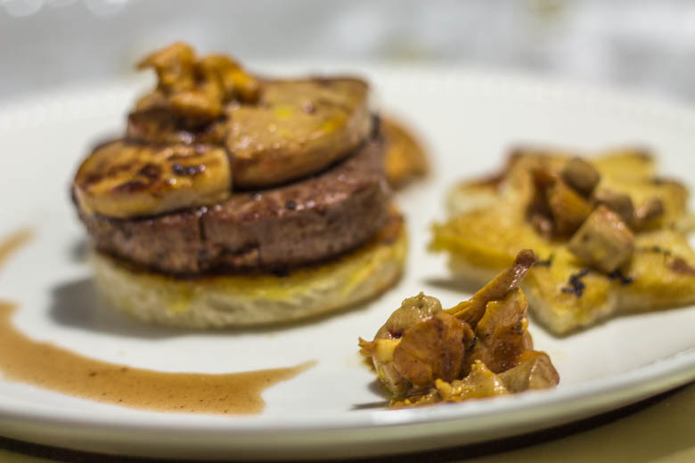
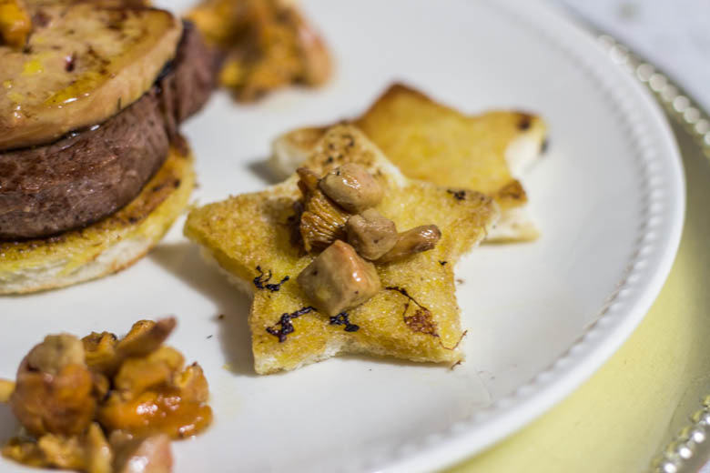
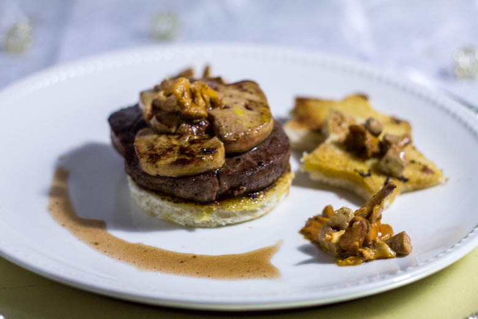

Tournedos Rossini

Je vous présente aujourd’hui une recette qui j’en suis sûre saura trouver une place sur vos tables dans les jours à venir! En effet, ici vous trouverez la recette de mes délicieux tournedos Rossini.
Le tournedos Rossini doit son nom à Gioachino Rossini, compositeur Italien de renommé du XIXème siècle mais aussi grand amateur de gastronomie fine et de vins rares. Il imagina cette recette et demanda au chef du « Café Anglais » qui était très renommé à l’époque à Paris de lui préparer. Finalement ce plat a eu sa place à la carte du restaurant. Sans doute que si ce plat a eu autant de succès c’est parce qu’avant d’être auteur compositeur Gioachino Rossini n’était autre que charcutier d’où son goût pour la bonne chair.
Aujourd’hui encore on continue de déguster du tournedos Rossini, notamment pendant la période des fêtes. En ce qui me concerne, j’ai cuisiné ce plat pour la première fois lorsque mon père m’a plus ou moins mis au défi de lui en préparer et depuis c’est devenu « presque » une habitude car on adore ça :). Si certains s’imaginent que c’est très compliqué détrompez vous! Je dirais qu’il s’agit avant tout d’une question d’organisation car ça va très vite. Composé d’un filet de tournedos déposé sur une tranche de mie dorée au beurre le tout surmonté d’une escalope de foie gras tout juste saisie à la poêle, (les plus chanceux le dégusteront avec des lamelles de truffes) le tournedos Rossini saura se faufiler j’en suis sûre dans votre cuisine tant cette recette est gourmande!
Je vous laisse maintenant découvrir la recette
Ingrédients
- Tournedos - 4 d'environ 180g chacun
- Foie gras cru - 4 tranches
- Pain de mie - 4 tranches
- Vin de Madère prioritairement ou à défaut du Porto - 100 ml
- Fond de veau - 250 ml
- Huile d'olive
- Beurre
- Sel, poivre
Instructions
- Préparer tous vos ingrédients pour ne pas vous laisser déborder!! (la préparation de la recette va assez vite il faut juste bien s'organiser)
- Dans une première poêle faire fondre du beurre et faites y revenir les tournedos 2 min (chrono en marche) de chaque côté
- Sortir de la poêle et réserver dans une assiette puis recouvrez d'aluminium pour conserver les tournedos au chaud
- Déglacer la poêle (qui a servi à la cuisson des tournedos) avec le fond de veau et ajouter le porto Définition de "déglacer": Opération qui consiste à verser un liquide (vin, eau,crème etc..) dans une poêle encore chaude qui vient de servir à la cuisson d'une viande afin de dissoudre les sucs dans le but de faire un jus ou une sauce pour accompagner le plat
- Fouetter pendant 3-4 bonnes minutes pour que la sauce épaississe
- Une fois qu'elle est bien chaude vous pouvez la conserver dans un bain marie pour ne pas perdre de chaleur ou dans un récipient recouvert de papier aluminium.
- Dans une deuxième poêle, faites chauffer un peu d'huile
- Saisir les foies gras 1 min de chaque coté dans la poêle
- Dorer les pains de mie préalablement découpés à l'emporte pièce dans cette même poêle
- Remettez les tournedos à dorer (1min à peine le temps de les arroser) et arrosez-les d'un peu sauce (il en faut pour le dressage)
- Dresser votre assiette (pour monter votre tournedos Rossini soyez très délicat..) - Déposer le pain de mie dans l'assiette - Poser le tournedos dessus puis mettez une tranche de foie gras sur le tournedos (très délicatement) - Napper de sauce
- Accompagner de pommes de terre grenaille et d'une poêlée de girolles c'est SUCCULENT!!!!



Les tips de la communauté
Très grande enthousiasme pour ce plat festif sophistiqué. Les lecteurs le considèrent comme un véritable plat de fêtes. L'auteure clarifie les étapes de cuisson et adresse les questions religieuses sur l'alcool.
Astuces
- L'alcool dans la sauce est essentiel pour créer les saveurs du plat
- L'alcool s'évapore totalement lors de la cuisson
- Dorer les tranches de pain dans une poêle séparée des tournedos
- Déglacer avec le fond de veau et l'alcool pour créer la sauce
- Présenter avec les petites étoiles de pain pour l'effet festif
Ajustements signalés
- Clarifier où cuire les tournedos et où dorer le pain (2 poêles différentes)
- Expliquer que l'arrosage du jus n'est pas une étape séparée